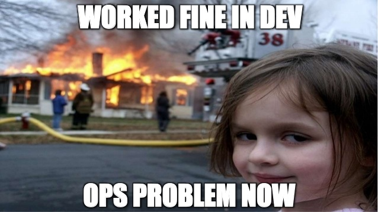

DevSecOps in Kubernetes
Emelie Tham
Philip Wester
Agenda
What and Why DevSecOps?
What is Kubernetes?
Kubernetes Security
Conclusion
The What and Why of DevSecOps
Before DevOps...
DevOps bridges the gap between development and operations
Next step...?
...DevSecOps!
Incorporating security to DevOps
DevSecOps is the application of DevOps practices through the lens of security by shifting security left, automating security tests and monitoring with the aim of making communication between developers and security engineers more effective.
Let's not leave security engineers out of the DevOps circle...
 =======
=======
Let's not leave security engineers out of the DevOps circle
 >>>>>>> 4b6d18a9116b584d4f2776e7f0cca4d663a4a0fc
>>>>>>> 4b6d18a9116b584d4f2776e7f0cca4d663a4a0fc
... when there are immense benefits of including them! 😃
Kubernetes
An open-source system that automates the deployment, scaling and mangement of containerized applications.
Kubernetes Security
Kubernetes Attack Surface
Kubernetes API
Application running inside Kubernetes
The Cloud Server
Conclusion
Any Questions?
References
-
Kim Carter, Francois Raynaud on DevSecOps, IEEE Software, (2017)
-
Nipuna Dilhara, CSA Releases “The Six Pillars of DevSecOps” Report. https://medium.com/@nipunadilhara/how-kubernetes-advances-devsecops-117572983b5a Accessed on [2020-04-8] (2020)
-
Technology For You, How Kubernetes Advances DevSecOps. https://www.technologyforyou.org/csa-releases-the-six-pillars-of-devsecops-report/ Accessed on [2020-04-8] (2019)